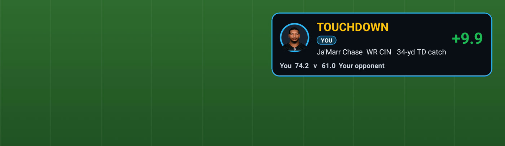
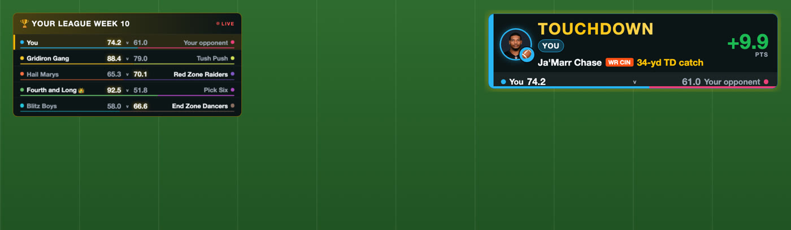

Sleeper alerts over RedZone (or anything you're watching): touchdowns, sacks, big plays and live scores. About 5 minutes with just the remote.


Real screenshots of the same touchdown: the top of a 1080p TV screen, with sample teams. Your own TV picture shows behind.
Start with Lite. You can upgrade to Full any time; the app switches over by itself.
With the Fire TV remote.
That's Lite done: no computer needed. Carry on to step 3 only if you want the Full version.
Full needs permission to draw over other apps, and Fire TV only allows that from another device on your Wi-Fi. First, on the TV:
192.168.1.50).This also installs the app if you skipped step 2.
5555, and connect.appops set app.fantasytv SYSTEM_ALERT_WINDOW allowiPhones can't run this kind of app. Lite works fine without it.
The same menu, opened with the remote at any time, changes:
| Setting | Choices |
|---|---|
| Pop-ups | Just my matchup / My matchup + league TDs / Everything |
| Sound | Off / Quiet / Louder |
| Scoreboard in the corner | Always / When scores change / Off |
| Delay alerts | None, 15, 30 or 60 seconds: if an alert spoils a play before your stream shows it, add a delay |
| Look | Broadcast / Stadium / Lower third |
Tip: Play the 1-minute demo in the menu shows last week's real scores from your league as if live, to see it working any time.
Install a new version the same way: Downloader with the same address (or the laptop line again). Your settings and the permission are kept.
| Problem | Fix |
|---|---|
| The menu says "Lite mode" | That's normal without step 3. Do step 3 for the Full version. |
| The laptop or phone can't connect (step 3) | Check ADB debugging is on, the TV's IP is right, and both are on the same Wi-Fi (not a guest network). |
| No "Allow USB debugging?" on the TV | Turn ADB debugging off and on again, then reconnect. |
| Nothing shows on the TV | Open Fantasy TV and check it says On. |
| Alerts appear before the play | Set Delay alerts to 30 or 60 seconds. |
| Too loud, or the picture stutters when a sound plays | Sound: Quiet or Off. |
| Wrong league | If you're in several, set it up again from the setup page and pick the league there. |